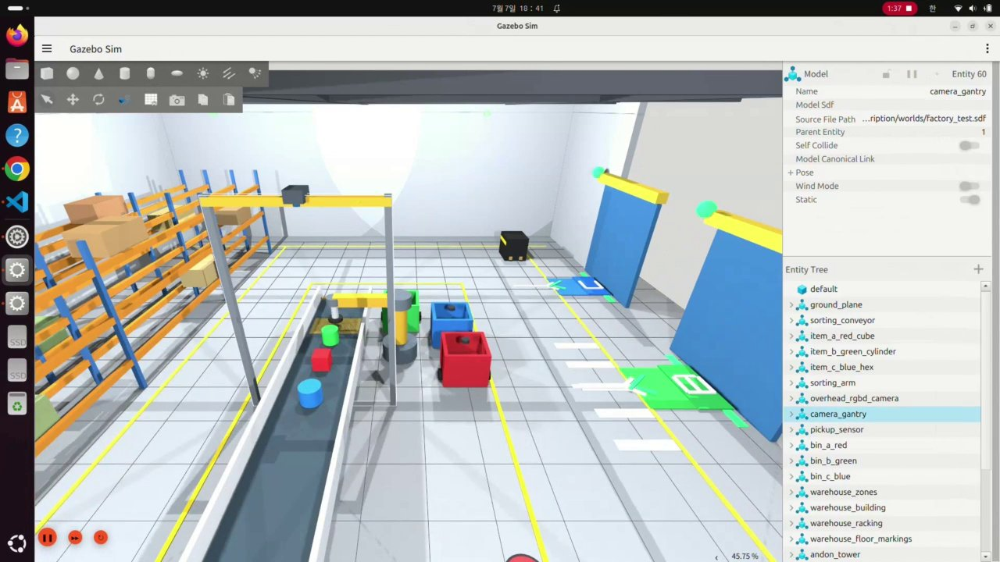
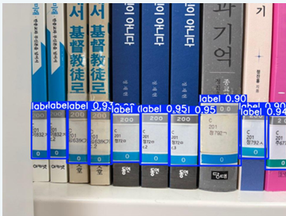
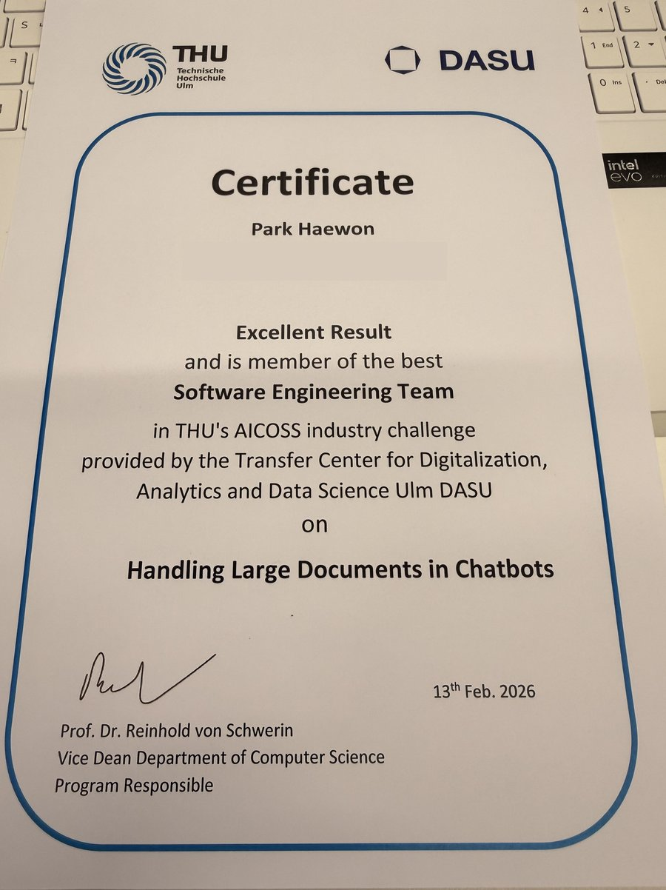

CAPSTONEIndustrial Sim Capstone · 스마트 팩토리 물류 시뮬레이션
컨베이어 공급, RGB-D 비전 분류, 로봇팔 Pick & Place, Nav2 AMR 운송을 하나의 ROS 2 공정 상태 머신으로 통합했습니다. 시드 42 기준 A/B/C 3/3 배송 완료, 테스트 20/20 통과.
PHYSICAL AI · VISION AI
전주대학교 인공지능학과 · 피지컬 AI 공부 중
피지컬 AI와 Vision AI에 관심을 두고 있습니다. 카메라와 센서로 주변을 인식하는 컴퓨터 비전, 인식한 정보로 경로를 계획하고 움직이는 ROS 2·Nav2 기반 자율주행, 여러 장비를 하나의 흐름으로 묶는 시스템 통합을 공부하고 있습니다. 시뮬레이션과 실제 데이터로 직접 실험하며, 이해한 것과 아직 풀지 못한 질문을 함께 기록합니다.
01 / RESEARCH
관심 연구 분야는 현재 정리 중입니다. 진행 중인 프로젝트를 마친 뒤 확정해 업데이트합니다.
여러 프로젝트를 진행하며 연구 방향을 탐색하고 있습니다. 주제가 정해지면 이곳에 정리합니다.
02 / SELECTED WORK
로봇 시뮬레이션, 자율주행, 컴퓨터 비전 프로젝트의 문제와 구현 방법, 확인한 결과와 남은 과제를 정리했습니다.

CAPSTONE컨베이어 공급, RGB-D 비전 분류, 로봇팔 Pick & Place, Nav2 AMR 운송을 하나의 ROS 2 공정 상태 머신으로 통합했습니다. 시드 42 기준 A/B/C 3/3 배송 완료, 테스트 20/20 통과.
실물 AutoCAR III G 3대를 동시에 제어해 주어진 목표를 달성하는 것을 목표로 합니다. 현재는 단일 차량의 가상 주행과 이동 장애물 회피를 준비하고 있습니다.
카메라로 사과 등급을 판정하고 AMR이 등급별 구역으로 운반하는 과정을 ROS 2·Gazebo로 구현합니다. AMR 주행·물류 파트를 맡아 Nav2 운반 기능을 개발하고 있습니다.

OCR책장 사진에서 YOLO11n으로 청구기호 스티커를 찾고(재현율 91.6%, 정밀도 97.4%) OCR로 읽는 장서점검 데모를 개발 중입니다. 이후 AR 글래스와 로봇으로 확장할 계획입니다.
03 / ACTIVITIES
RGB-D 비전 분류, 컨베이어, 로봇팔, Nav2 AMR을 하나의 ROS 2 물류 공정으로 통합했습니다.
차량형 로봇의 경로 계획과 장애물 회피를 연구하며, 실물 차량 3대의 협동 주행을 목표로 가상 주행을 준비하고 있습니다.
카메라가 판정한 사과 등급을 운반 구역에 연결하고, 팀에서 AMR 주행과 물류 제어를 맡았습니다.
스마트폰 사진에서 청구기호 라벨을 검출하고 문자를 읽는 장서점검 데모를 개발하고 있습니다.
04 / AWARDS
대회와 산학 챌린지에서 받은 수상 기록입니다.
독일 울름 공과대학교(Technische Hochschule Ulm)와 DASU가 주관한 산학 챌린지. 주제 “Handling Large Documents in Chatbots”에서 최우수 소프트웨어 엔지니어링 팀의 일원으로 선정되었습니다.
빅데이터 분석 대회에서 최우수상을 받았습니다.

05 / SKILLS & METHODS
프로젝트에서 직접 써 본 기술입니다. 각 기술이 쓰인 프로젝트를 함께 적었습니다.
도구 이름보다 어떤 문제에 어떻게 썼는지를 기준으로 정리했습니다. 계산은 코드로, 해석은 AI로 나누고, 결과는 테스트와 재현 가능한 실행으로 확인합니다.
Industrial Sim Capstone · Smart APC · Physical AI 모빌리티
책등 OCR · Industrial Sim Capstone